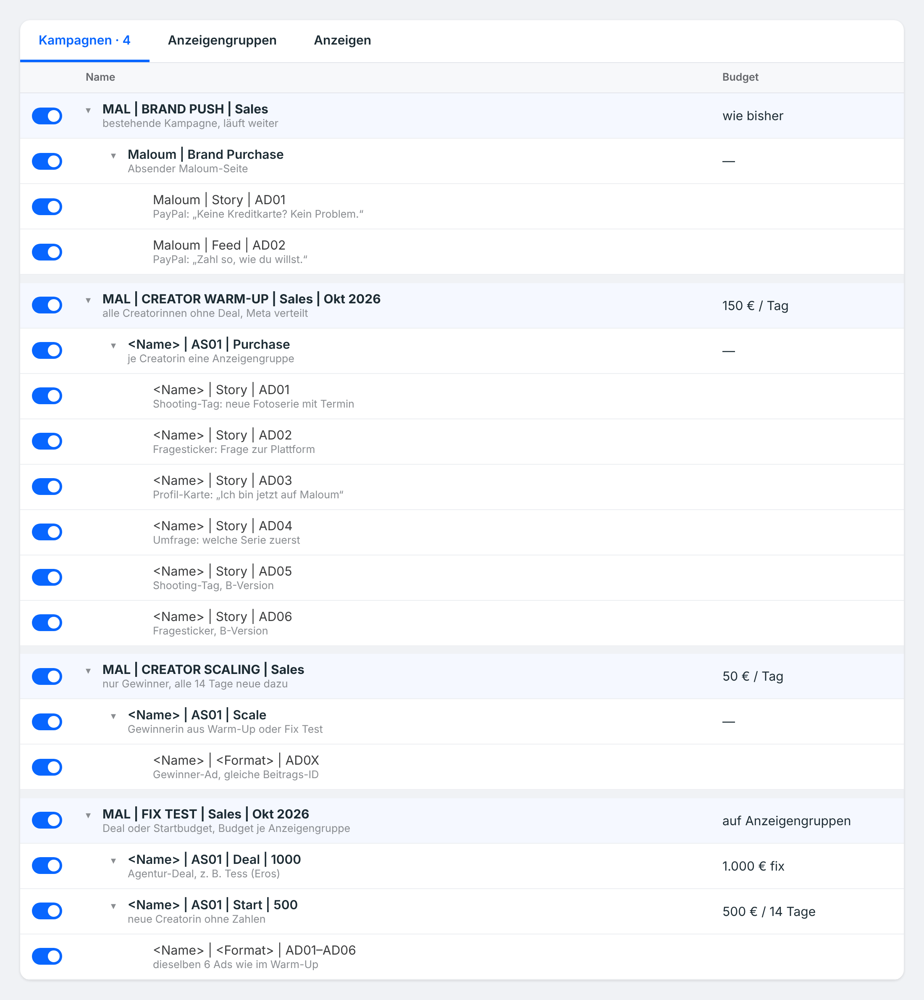
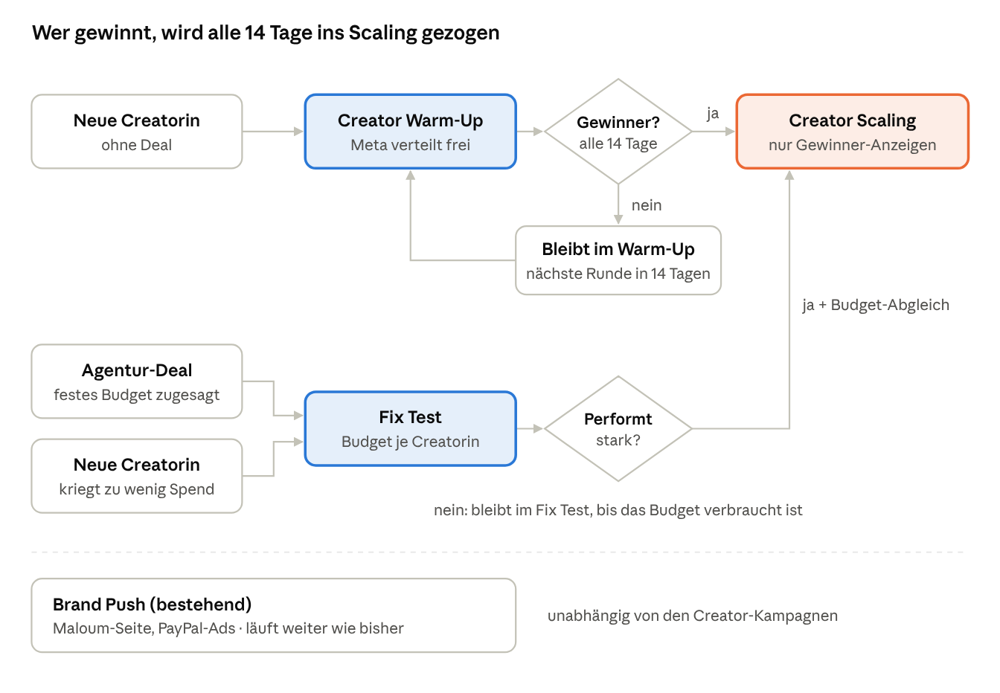

Kampagnenstruktur.
Brand Push, Creator Warm-Up, Creator Scaling und Fix Test. Wer gewinnt, wird alle 14 Tage ins Scaling gezogen.
Vier Kampagnen
MALOUM läuft in vier Kampagnen: Brand Push (die bestehende Kampagne läuft weiter), Creator Warm-Up, Creator Scaling und Fix Test. So sieht das im Werbeanzeigenmanager aus, mit Platzhaltern statt echter Namen:

So wandern die Creatorinnen durch die Kampagnen

- Ohne Deal → Creator Warm-Up. Jede neue Creatorin ohne Deal bekommt dort eine Anzeigengruppe
<Name> | AS01 | Purchasemit 6 Anzeigen. Das Budget sitzt auf der Kampagne, Meta verteilt es selbst. Die Starken fressen die Schwachen, und das ist gewollt. - Alle 14 Tage wird ausgewertet, nach Backend-Neukunden je Creatorin und Anzeige. Gewinner-Anzeigen werden ins Creator Scaling hochgezogen, mit derselben Beitrags-ID, und im Warm-Up pausiert.
- Kein Gewinner? Dann bleibt sie erstmal im Warm-Up und ist in der nächsten Runde wieder dabei. Vorschlag: Nach zwei Runden ohne Gewinner (28 Tage) wird sie entfernt und macht Platz für neue Creatorinnen.
- Creator Scaling enthält nur Gewinner-Anzeigen, eine Anzeigengruppe
<Name> | AS01 | Scaleje Gewinnerin. Das Budget sitzt auf der Kampagne und wird alle 2–3 Tage um höchstens 20 % erhöht. Stella startet direkt hier. - Fix Test ist für zwei Fälle da. Agentur-Deal: Die Creatorin hat ein zugesagtes Budget, z. B. Tess und Emma von Eros. Sie läuft hier mit festen 1.000 € auf ihrer eigenen Anzeigengruppe und wird nicht gefressen. Startbudget: Eine neue Creatorin bekommt im Warm-Up so wenig Budget, dass wir keine Zahlen für sie haben (Vorschlag: unter 200 € in den ersten 14 Tagen). Dann bekommt sie im Fix Test 500 € für 14 Tage und geht danach mit ihren Zahlen ins Scaling oder zurück ins Warm-Up. Läuft sie gut, kommen ihre Ads ins Creator Scaling, das Fix-Test-Budget gleichen wir dann ab.
- Brand Push läuft wie bisher von der MALOUM-Seite, mit den PayPal-Anzeigen, und ist unabhängig von den Creator-Kampagnen.
Die vier Kampagnen im Detail
| Brand Push | Creator Warm-Up | Creator Scaling | Fix Test | |
|---|---|---|---|---|
| Kampagnenname | MAL | BRAND PUSH (bestehend) | MAL | CREATOR WARM-UP | Sales | <Monat> | MAL | CREATOR SCALING | Sales | MAL | FIX TEST | Sales | <Monat> |
| Wo sitzt das Budget? | auf der Kampagne | auf der Kampagne | auf der Kampagne | auf jeder Anzeigengruppe |
| Wie viel? | wie bisher | 150 €/Tag zum Start (4.500 € im Monat) | 50 €/Tag zum Start (1.500 € im Monat) | 1.000 € fest je Deal-Creatorin bzw. 500 € Startbudget |
| Wer ist drin? | MALOUM selbst | alle Creatorinnen ohne Deal | Gewinnerinnen aus Warm-Up und Fix Test, Stella direkt | Creatorinnen mit Agentur-Deal oder Startbudget |
| Anzeigengruppe | Maloum | Brand Purchase | <Name> | AS01 | Purchase | <Name> | AS01 | Scale | <Name> | AS01 | Deal | <Budget> oder <Name> | AS01 | Start | 500 |
| Anzeigen | PayPal Story + Feed | 6 je Creatorin | nur Gewinner-Anzeigen | 6 je Creatorin |
| Anzeigen-Name | Maloum | Story | AD01 | <Name> | Story+Feed | AD01 | gleicher Name wie vorher | <Name> | Story+Feed | AD01 |
| Optimierungs-Event | Purchase New | Purchase New | Purchase New, später Test mit First Purchase | je Anzeigengruppe laut Deal (Eros: Follow) |
Was wir abschalten
| Was | Warum | Was passiert damit |
|---|---|---|
| Bisherige FAQ-/Chat-Ads | 11 von 16 Ads mit Kontakt- oder Antwortversprechen sind gesperrt. Jede weitere Sperre erhöht das Risiko für das Konto. | Pausieren, nicht löschen |
| Lea Sophy | 288 € im Oktober, kein Neukunde. Im September 778 € und 1 Käufer. | Pausieren |
| Einzelkampagnen je Creatorin | Zwei Kampagnen pro Creatorin teilen ein ohnehin kleines Budget. | Als Anzeigengruppen im Warm-Up bzw. Fix Test neu anlegen |
Neue Ads legen wir als neue Ads an statt bestehende zu bearbeiten. Jede Bearbeitung löst eine neue Prüfung durch Meta aus.
Tracking: was vor dem Start stehen muss
- Ein UTM-Schema für alle Ads, direkt beim Anlegen gesetzt. Nur so können wir alle 14 Tage nach Backend-Neukunden je Creatorin und Anzeige auswerten.
- Ein Testkauf vor dem Start: Klick auf die Ad, Registrierung, Kauf, und dann prüfen, ob alles im Export ankommt.
- Abstimmung mit André zu Pixel und Events. Offen ist vor allem, warum Meta deutlich mehr Käufe meldet als im Backend ankommen.